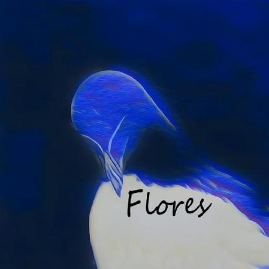

AI Web App / Self-hosted
Ruby Tools NEW
AI image utility with a Linux terminal aesthetic. Originally a WhatsApp bot feature, now a standalone web app hosted directly on my home server.



Backend Developer & Linux Systems
High school student at SMK Telkom Banjarbaru, Software Engineering major. I build WhatsApp automation with Baileys, manage Linux infrastructure, and write scripts so I don't have to do the same thing twice. Web dev isn't really my thing — but this site exists, so make of that what you will.
Stuff I built and actually use.
AI image utility with a Linux terminal aesthetic. Originally a WhatsApp bot feature, now a standalone web app hosted directly on my home server.
Group management, media handling, custom commands. Talks directly to the WA Web API through Baileys — no third-party wrappers.
Source →

Old laptop running Debian, set up from scratch. CasaOS for the web UI, Immich for photo backups, Tailscale for remote access. Doubles as personal cloud storage and hosts my WhatsApp bot 24/7.


Neovim, zsh, WM configs. Everything version-controlled so I can nuke and reinstall without thinking.
Source →
Tools I reach for daily.
Want to talk? Pick your channel.